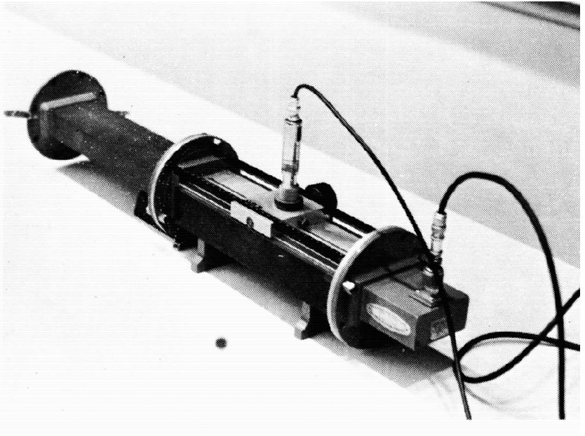
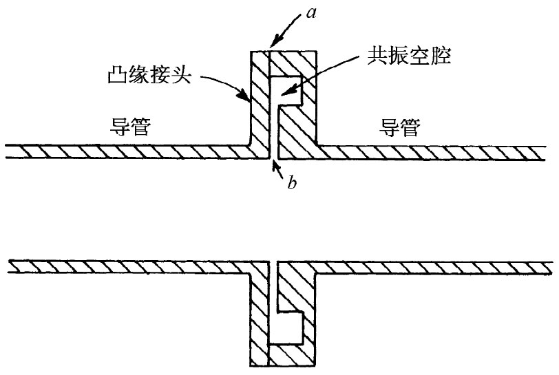
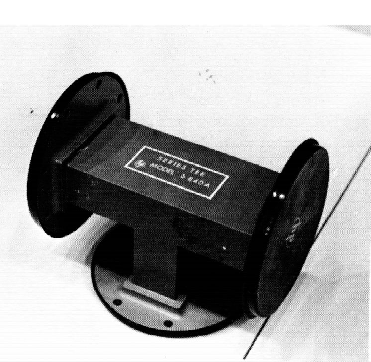
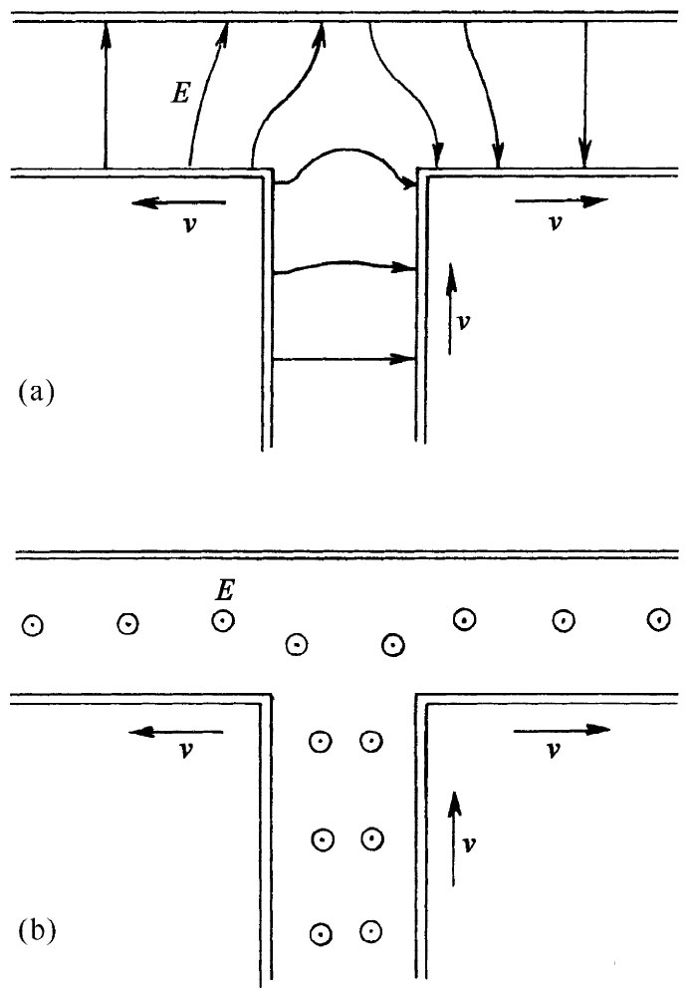

图24-13 单向耦合器
波导的一种重要实际应用就是对于高频功率的传输，比如把一个高频振荡器或一部雷达装置中的输出放大器耦合至一根天线。事实上，天线本身往往包括一个抛物线形反射镜，由一个在其末端张开成“喇叭口”形状的波导把沿导管而来的波辐射出去，并馈至镜的焦点上。尽管高频电磁波可以经由同轴电缆传输，但对于传输大量功率，波导较为优越。首先，可以沿一条缆线传输的最大功率受到导体间的绝缘材料（固体或气体）击穿的限制。对于给定的功率量，在一导管内的场强往往比同轴电缆内的弱，因而在击穿发生之前就可在其中传送较大的功率。其次，同轴电缆中的功率损耗往往比在波导管内的大。在同轴电缆内必须有用以支持该中心导体的绝缘材料，而在这一材料中便有能量损耗——特别是在高频上。并且，在同轴电缆的中心导体上电流密度很高，而由于损耗是随电流密度的平方 增大的，因而出现在导管壁上的较低电流就会导致较小的能量损耗。为确保损耗最小，导管内壁往往是用一种诸如银的高电导率材料电镀的。
凡在有波导存在的“电路”中，连接的问题与在低频时相应的电路问题大不一样，这种连接常称为微波“衔接”法。为此目的许多特殊器件已经发展起来。例如，两节波导往往是经由凸缘接头互相连接的，这可由图24-9中看出。然而，像这样的连接会导致严重的能量损耗，因为那些表面电流必然流经接口，而那里可能有相对高的电阻。避免这种损耗的一种办法是制造截面如图24-10所示的那种凸缘接头。在导管的相邻两节间留下一点空隙，而在其中一个凸缘接头上则刻有一条槽沟以便造成一个如图23-16（c）所示的那种小空腔。适当地选取这个空腔的大小尺寸使它能在所采用的频率发生共振。这一共振腔对于电流会呈现一个高“阻抗”，因而流经该金属接口（图24-10中的a处）的电流就相对地小。导管里的大电流只是对该空隙（图中的b处）的“电容”充电及放电而已，因而那里仅有少量的能量损耗。
|  |  |
| 图24-9 几段波导由凸缘接头互相连接 | 图24-10 两节波导间的低损耗连接 |
假设你想要在某一处截断一波导管使得不会形成反射波，那么，你就必须在其末端安置一种模拟一根无限长导管的东西。你需要有一个对于导管的作用就像特性阻抗对于传输线的作用那样的“终端”——对到达之波仅有吸收而不产生反射的一种东西。此时该导管将起着仿佛永远接续下去的作用。像这样的终端是通过在该导管中放进某种经过精心设计的电阻材料的劈形物制成的。它被用来吸收波的能量使得几乎不产生任何反射波。
如果你想要把三件 东西——例如一个源与两个不同的天线——互相连接起来，那么你就可用一个像图24-11所示的那种“T”形波导来完成。在这个“T”形管中心截口馈入的功率会被分开经由两条侧臂流出（可能还有一些反射波）。从图24-12的简略图示中你可以定性地看出，当场到达该输入截口的末端时就会扩散开来并形成电场，该电场会使波在该两臂中开始传播出去。在接合处的这些场会约略如图24-12（a）或（b）所示，具体要视导管里的电场是与该“T”形管的“顶”平行还是垂直而定。
|  |  |
| 图24-11 “T”形波导管（在凸缘接头处配备有塑料端帽，以保持当这个“T”形导管不用时内部清洁） | 图24-12 在一“T”形波导中关于两种可能取向的电场 |
最后，我们想要描述一种称为“单向耦合器”的器件，这对于在你已经连接好一个复杂的波导布局之后要讲出到底发生了什么是非常有用的。假设你想知道在波导的某一特定截口处波朝哪一方向行走——例如，你或许会怀疑是否存在一强反射波。若导管里的波是沿某一方向行走，这单向耦合器就会从其中吸取一小部分功率，但若波是朝另一方向行走，则不能取出任何功率。通过把这个耦合器的输出连接到一个检波器上，你就能够测得导管中的“单向”功率。
图24-13是单向耦合器的简图，沿着一段波导AB的一个面上焊接上另一段波导CD。波导CD被弯开以便有可以安置凸缘接口的地方。在把这两个波导焊接在一起之前，要在每一波导上钻通两个（或者更多个）洞（借以互相耦合），以便使主波导AB中的一些场可被耦合至副波导CD中去。每个洞起着小天线的作用，以致在副波导中产生出波来。要是只有一个洞，波会在两个方向上被送出，而且不管波在原导管中走哪个方向都应该相同。但当存在间隔等于导管波长的四分之一的两个洞时，它们就会形成相位差90°的两个源。你是否还记得，在第1卷第29章中讨论过空间相距λ/4、而在时间上激发相位超过90°的两根天线发出的波引起的干涉？我们曾发现，这两波在一个方向上相减而在相反方向上相加。相同的事情也将在这里发生。导管CD中所产生的波与在AB中的波会有相同的传播方向。
图24-13 单向耦合器
如果在主导管中波正从A向B传播，则在副导管的输出口D处将会有一个波。若在主导管中的波是从B传向A，则将有一个波朝副导管的C端传播。但这一端却已装配成一终端，因而波将被吸收，于是在该耦合器的输出口处就不存在波了。